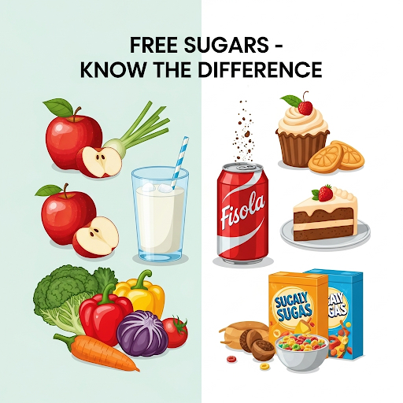

1. 🥦 Healthy Eating Tip 1: Base Your Meals on Higher Fibre Starchy Carbohydrates
Higher fibre starchy carbohydrates should form just over one-third of your everyday meals. Foods like potatoes, bread, rice, pasta, and cereals fall into this category.
Go for wholegrain or higher fibre versions such as wholewheat pasta, brown rice, or potatoes with skin — they contain more fibre compared to refined or white starches and help you stay fuller for longer, aiding in weight management.
 Include at least one starchy food in each main meal. Despite the myth, starchy foods are not inherently fattening. In fact, gram for gram, they deliver less than half the calories of fat.
However, be mindful of how you cook and serve them. Adding oil to chips, butter on toast, or creamy sauces to pasta can significantly raise the calorie count.
Include at least one starchy food in each main meal. Despite the myth, starchy foods are not inherently fattening. In fact, gram for gram, they deliver less than half the calories of fat.
However, be mindful of how you cook and serve them. Adding oil to chips, butter on toast, or creamy sauces to pasta can significantly raise the calorie count.
Choose wholegrain or higher fibre options such as wholewheat pasta, brown rice, or potatoes with skin, as these contain more fibre and keep you fuller for longer.
Include at least one starchy food in each main meal. Though starchy foods are often thought to be fattening, gram for gram they provide less than half the calories of fat.
Be mindful of added fats like oil, butter, or creamy sauces that can increase calorie content.
2. 🍎 Healthy Eating Tip 2: Eat Lots of Fruit and Veg
Health experts advise consuming at least 5 portions of fruit and veg each day. These can be fresh, frozen, dried, canned, or even juiced.
Achieving your 5 A Day isn’t difficult — try slicing a banana over your breakfast cereal, or replacing a processed snack with an apple or orange.

A standard portion size is:
80g of fresh, frozen, or canned fruit or vegetables
30g for dried fruit (best eaten during meals)
150ml of fruit juice, smoothie, or vegetable juice (limit to 1 glass daily due to high natural sugar content, which may harm your teeth)
Adding a variety of colourful fruits and vegetables to your diet supports better digestion, immunity, and overall wellness.
3. 🍬 Healthy Eating Tip 3: Cut Down on Sugary Foods and Drinks
Sugary foods and drinks are often packed with energy, either in the form of kilojoules or calories, and regular consumption can lead to weight gain over time. Additionally, frequent sugar intake — especially between meals — can contribute to tooth decay and poor dental health.
The sugars you need to reduce are called free sugars. These are sugars added to food and drink during processing, or those found naturally in substances like honey, syrups, unsweetened fruit juices, and smoothies.
This doesn’t include the natural sugars found in whole fruits or milk — those are fine as part of a healthy diet.
Surprisingly, many packaged foods and drinks include high levels of free sugars. Examples include:
• Sugary fizzy drinks
• Sugary breakfast cereals
• Cakes and biscuits
• Pastries and puddings
• Sweets, chocolate, and even alcoholic drinks
To make better choices, always read food labels.
High in sugar: More than 22.5g of total sugars per 100g
Low in sugar: 5g or less per 100g
By staying aware of your sugar intake, checking labels, and choosing low sugar foods, you can support better nutrition, energy balance, and long-term health goals.
4. 🍩 Healthy Eating Tip 4: Cut Down on Saturated Fat and Sugar
🧈 Saturated Fat
Our body needs some fat for energy and absorption of certain nutrients, but both the type and quantity of fat matter.
There are 2 main types:
• Saturated fat
• Unsaturated fat
Too much saturated fat can raise cholesterol levels in the blood, increasing the risk of heart disease.
Recommended limits:
▪ Men: No more than 30g per day
▪ Women: Limit to 20g per day
▪ Children under 11: Less than adults
▪ Children under 5: Low-fat diet is not suitable. Full-fat dairy (like cheese, fromage frais, and yoghurt) is encouraged up to age 2.
Common sources of saturated fat include:
• Fatty cuts of meat
• Sausages
• Butter and hard cheese
• Cream
• Cakes and biscuits
• Lard and pies
To reduce your intake, switch to unsaturated fats such as:
• Vegetable oils
• Olive oil
• Oily fish
• Avocados
Choose lean cuts of meat, trim visible fat, and use reduced-fat spreads instead of butter, lard, or ghee.
Remember: All fats are high in energy, so even healthy fats should be eaten in moderation.
5. 🧂 Healthy Eating Tip 5: Eat Less Salt – No More Than 6g a Day for Adults
⚠️ Salt and Your Health
Consuming too much salt can lead to higher blood pressure, which increases your chances of developing heart disease or suffering a stroke.
Even if you don’t add salt during cooking or at the table, you might still be eating too much. Around three-quarters of the salt we consume is already present in processed or packaged foods like:
• Breakfast cereals
• Soups
• Breads
• Ready-made sauces
To manage your sodium intake, always check food labels.
High in salt: More than 1.5g of salt per 100g
Daily limit:
▪ Adults and children 11+: Max 6g/day (about 1 teaspoon)
▪ Younger children: Even less is recommended
By choosing low salt options and reducing intake from processed foods, you can support a healthy heart and reduce the risk of hypertension.
6. 🏃♂️ Healthy Eating Tip 6: Get Active and Be a Healthy Weight
🏃♀️ Physical Activity and Healthy Weight
Along with maintaining a healthy diet, engaging in regular physical activity plays a key role in improving your wellbeing and lowering the risk of serious health problems.
Staying active can help prevent or manage conditions like:
• Type 2 diabetes
• Certain cancers
• Heart disease
• Stroke
Being overweight or obese increases the risk of these illnesses. On the other hand, being underweight may also negatively impact your health.
Most adults who are overweight need to lose weight by:
▪ Consuming fewer calories
▪ Increasing physical activity
A good approach includes:
• Eating a balanced diet
• Following a consistent fitness routine
• Limiting calorie intake
To check if you're at a healthy weight, use a BMI (Body Mass Index) calculator — it helps determine whether your weight is appropriate for your height.
If you're aiming to lose fat safely, consider structured programs like the 12-week NHS weight loss plan, which offers expert advice on nutrition and physical activity.
If you're underweight, consult trusted resources or speak with a dietitian or GP for personalized guidance.
7. 💧 Healthy Eating Tip 7: Do Not Get Thirsty – Drink Plenty of Fluids Daily
💧 Stay Hydrated
To prevent dehydration, it’s important to drink enough fluids throughout the day. The government recommends consuming about 6 to 8 glasses daily, in addition to the moisture you get from your food.
All non-alcoholic drinks count toward your fluid intake, but the healthiest options include:
• Water
• Lower fat milk
• Lower sugar drinks such as tea and coffee
It’s best to avoid sugary soft drinks and fizzy beverages because they are high in calories and can harm your teeth.
Even unsweetened fruit juices and smoothies contain a high amount of free sugars. Limit your combined intake of these to no more than 150ml per day (a small glass).
💡 Tip: Increase your fluid intake during hot weather or physical exercise to stay well-hydrated.
8. 🍽️ Healthy Eating Tip 8: Do Not Skip Breakfast
🍽️ Don't Skip Breakfast
Some people skip breakfast thinking it will help them lose weight. However, a healthy breakfast that is high in fibre and low in fat, sugar, and salt can be an important part of a balanced diet and provide the nutrients your body needs for good health.
A tasty and nutritious option is a wholegrain, lower sugar cereal served with semi-skimmed milk and topped with fresh fruit slices.
Eating breakfast helps:
• Boost your metabolism
• Provide an energy boost for the day
• Support weight management
Frequently Asked Questions (FAQs)
1. How to gain weight safely and effectively?
To gain weight safely, focus on consuming nutrient-dense foods like lean proteins, healthy fats, and whole grains. Combine this with strength training exercises and ensure you’re eating more calories than you burn.
2. What are the best tips to lose belly fat naturally?
Losing belly fat naturally involves a balanced diet, regular exercise focusing on cardio and core strengthening, proper hydration, and reducing sugar and processed foods.
3. How can I lose belly fat without exercise?
You can reduce belly fat without exercise by controlling your calorie intake, eating a healthy diet rich in fiber and protein, avoiding sugary drinks, and improving your sleep quality.
4. What is the difference between saturated and unsaturated fats?
Saturated fats are typically solid at room temperature and can raise cholesterol levels, increasing heart disease risk. Unsaturated fats are healthier fats found in foods like olive oil, avocados, and nuts.
5. How much salt is safe to consume daily?
Adults should consume no more than 6 grams (about 1 teaspoon) of salt per day to reduce the risk of high blood pressure and heart disease.
6. Why is breakfast important for weight management?
A healthy breakfast boosts metabolism, provides energy for the day, and helps control appetite, which supports effective weight management.
7. How much water should I drink daily to stay hydrated?
It is recommended to drink about 6 to 8 glasses of fluids daily, including water, lower-fat milk, and unsweetened beverages like tea and coffee.
8. What are practical ways to stay physically active for better health?
Engage in activities such as walking, jogging, cycling, swimming, or fitness classes regularly. Aim for at least 150 minutes of moderate exercise weekly.